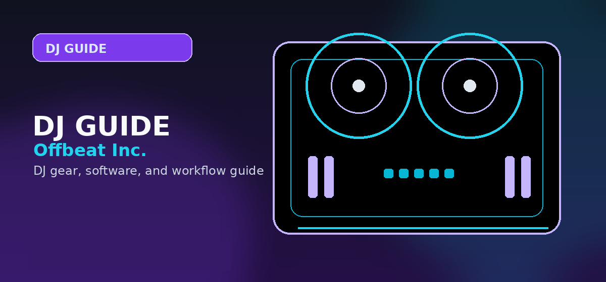

Native Instruments Komplete 15 Review (2026): Is the Ultimate Bundle Still Worth It?
Comprehensive guide to Native Instruments Komplete review 2026 plugins bundle value with practical recommendations and current buying notes — updated 2026.

Disclosure: This page uses affiliate links. We may earn a commission at no extra cost to you. Full disclosure →
In 2026, the "plugin fatigue" facing music producers has reached a breaking point. With an endless stream of niche AI-driven VSTs and subscription models, the challenge is no longer finding a sound, but managing the tools used to create it. Native Instruments Komplete remains the industry's most ambitious answer to this chaos, offering a consolidated ecosystem of synthesizers, samplers, and effects. Whether you are scoring a cinematic trailer in Logic Pro, crafting heavy basslines in Ableton Live, or arranging complex patterns in FL Studio, Komplete aims to be the only bundle you ever need. But as the landscape shifts toward leaner, cloud-based workflows, does the massive footprint of Komplete still provide genuine value, or is it simply an expensive collection of legacy tools? We dive into the 2026 value proposition.
The Gold Standard: Kontakt 8 and Sample Libraries
At the heart of Komplete is Kontakt, which in 2026 remains the undisputed king of sampling. For composers and sound designers, the value of Komplete is almost entirely tied to the sheer volume of high-fidelity libraries. From the hyper-realistic orchestral strings and cinematic brass to the niche ethnic instruments and "Session" series (Guitarist and Pianist), Kontakt provides a professional foundation that would cost thousands if purchased individually. The integration of AI-assisted articulation switching in the 2026 version has significantly reduced the "robotic" feel of MIDI programming. While the RAM requirements remain steep, the ability to transition from a lo-fi hip-hop Rhodes to a full symphonic ensemble within one interface is a workflow advantage that few competitors can match.
Electronic Powerhouses: Massive X and Monark
For the electronic producer, Komplete offers a masterclass in synthesis. Massive X continues to be a powerhouse for wavetable synthesis, providing the aggressive, modulating textures essential for modern EDM and industrial techno. Complementing this is Monark, which provides one of the most convincing Minimoog emulations available, delivering the warmth and instability of analog hardware. In 2026, these tools integrate seamlessly with the dominant DAWs, allowing for deep automation and modulation mapping. The primary strength here is the curation; instead of hunting for a dozen different "bass" plugins, you have a spectrum covering everything from clean sub-frequencies to distorted, screaming leads. The learning curve is steep, but the sonic ceiling is virtually non-existent.
Studio Utilities: Guitar Rig 7 and Effects
Beyond the instruments, Komplete provides a comprehensive suite of mixing and creative effects. Guitar Rig 7 remains the go-to for home studio guitarists, offering a massive array of amp simulations and stompboxes that eliminate the need for bulky hardware in small spaces. The inclusion of high-quality compressors, reverbs, and delays ensures that a producer can take a track from a raw recording to a polished demo without leaving the Native Instruments ecosystem. While specialized plugins (like those from FabFilter or Soundtoys) may offer more surgical precision, the "all-in-one" nature of the Komplete effects suite is perfect for those who prioritize creative flow over obsessive tweaking. It turns a basic DAW setup into a fully realized professional studio.
Tiered Value: Select, Standard, and Ultimate
Native Instruments offers three tiers, and choosing the right one is critical to avoiding wasted spend. Komplete Select is the entry point, ideal for hobbyists who need a taste of Kontakt and Massive without the heavy investment. Komplete Standard is the "sweet spot" for most bedroom producers, providing the core essentials for 90% of music genres. However, Komplete Ultimate is where the true value lies for professionals. While the price tag is significant, the inclusion of the full orchestral libraries and advanced synthesis tools makes it a strategic investment. When you calculate the cost of buying these libraries a la carte, Ultimate often represents a 60-70% discount. For those moving into professional scoring or high-end production, the Ultimate bundle is an unmatched shortcut to a world-class sound palette.
Komplete 2026 Comparison Table
| Tier | Est. Price | Key Highlights | Ideal User | Value Score |
|---|---|---|---|---|
| Select | $99 | Kontakt Player, Massive, Basic FX | Beginners / Hobbyists | 7/10 |
| Standard | $499 | Full Kontakt, Massive X, Guitar Rig 7 | Bedroom Producers | 8/10 |
| Ultimate | $899 | Full Library Suite, Cinematic Tools | Professionals / Composers | 10/10 |
Quick Verdict
Buy it if: You want a "studio in a box" that covers every possible genre and you prefer a curated ecosystem over managing 50 different plugin vendors.
Skip it if: You already own specialized libraries for your specific genre or if your computer lacks the SSD space and RAM to handle massive sample libraries.
The Native Instruments Komplete bundle remains the most comprehensive toolset in music production for 2026. While the sheer size of the package can be intimidating, the synergy between the tools and the professional quality of the sounds make it a foundational investment for any serious creator. Stop hunting for individual VSTs and start making music.
[Check the latest deals on Komplete 15 via our affiliate links here to save on your upgrade!]
Verdict: Komplete 15 Select is the best entry into the NI ecosystem -- 13+ GB of premium instruments and effects, all accessible in Komplete Kontrol and Maschine. For producers who want a single library upgrade covering everything from orchestral to electronic, Standard justifies the price step-up. Wait for the Black Friday sale -- NI consistently offers 50-60% off. Check Komplete pricing on Amazon →
Shop on Amazon
Find Native Instruments bundles on Amazon — Komplete Start to Ultimate.
Who Should Buy This?
Native Instruments Komplete 15 Review (2026) is the right choice if you want professional-grade quality that will last through years of regular use. It suits DJs who have moved past entry-level gear and need something that can handle club environments and regular touring.
- Ideal for: intermediate to advanced DJs upgrading from a first controller
- Not ideal for: first-time buyers on a tight budget who should start with a more forgiving entry-level option
- Best purchased from: an authorised retailer with warranty coverage
Getting the Most From Your Choice
Whichever option you choose from this page, these practices consistently help users maximise the value of music software and production tools:
- Start with the free tier or trial — every serious music tool offers a trial period; use it fully before committing to a paid plan
- Focus on depth over breadth — mastering one DAW or software tool completely is far more valuable than superficial knowledge of several
- Join the official community — most major tools have dedicated Discord servers, forums, or subreddits with active users and tutorial creators
- Update regularly — software tools in the music production space ship meaningful improvements quarterly; keep your tools current for bug fixes and new features
The music production and DJ software landscape continues to evolve rapidly. Bookmark this page to check for updated recommendations as new versions and competitive alternatives emerge throughout 2026.
Full Comparison Table
Use this reference table to compare all the options covered in this guide at a glance:
| Consideration | Entry-Level Options | Mid-Range Options | Professional Options |
|---|---|---|---|
| Typical price range | Under $150 | $150 — $400 | $400+ |
| Best for | Absolute beginners; casual use | Serious hobbyists; semi-pro | Working professionals; touring DJs |
| Build quality | Plastic chassis, standard jogs | Metal components, improved jogs | Club-grade construction |
| Software included | Lite versions only | Full versions included | Full + pro features activated |
| Resale value | Low | Moderate | High (holds value well) |
For most beginners reading this guide, the mid-range tier represents the best value. Entry-level gear is often outgrown within 6 months, while professional gear has capabilities that may go unused for years. Put the savings toward music, lessons, or a better audio interface instead.
What to Buy First vs What to Wait On
- Buy first: Controller + headphones — these are the core tools where quality directly affects the learning experience
- Can wait: Mixer upgrades, USB drives, custom cartridges — these matter more once you have core skills developed
- Rent before buying: PA speakers for mobile gigs — rental makes more sense than purchase until you have 10+ events booked
- Skip entirely (for most): Standalone media players (CDJs) — software-based workflow is professional-grade and significantly cheaper
Practical Buying Guide: Which Tier Fits Your Workflow?
Choosing the right Komplete package isn't just about the raw count of plugins; it's about matching the library to your actual production needs. Here is how to decide based on your creative focus:
Workflow-Based Recommendations
- The Beatmaker: Go for Komplete Standard. You get the essential Battery 4 for drums, massive synth power for bass design, and enough keys/pads to cover modern hip-hop and house production without the bloat of orchestral libraries.
- The Sound Designer: Komplete Ultimate is non-negotiable. You need the granular synths, the deeper modulation capabilities of the full Reaktor suite, and the massive collection of cinematic soundscapes included in the higher-tier packs.
- The Film/Game Scorer: Komplete Collector’s Edition or Ultimate is required. You need the full range of orchestral libraries (Symphony Series) and high-fidelity acoustic instruments that aren't included in the lower tiers.
Upgrade vs. New Purchase Strategy
Never pay full price if you can avoid it. Native Instruments runs their "Summer of Sound" and "Cyber Season" sales twice a year, offering 50% off upgrades. Pro Tip: Buy a cheap "Komplete Select" hardware controller (like a Maschine Mikro or M32 keyboard) that includes a base license. You can then use that base license to purchase an "Upgrade" version of the larger bundles, which is almost always cheaper than buying the full "Collector's Edition" outright.
Technical Considerations: Storage & Performance
Before you hit download, ensure your setup can handle the load:
- Storage: Komplete Ultimate can exceed 500GB+ of library content. Do not attempt to run these off a standard HDD; use a dedicated External SSD (USB 3.1 or Thunderbolt) to avoid long load times in Kontakt.
- CPU Overhead: While NI has optimized their plugins, running multiple instances of Massive X or high-fidelity Kontakt libraries can throttle older CPUs. Ensure your machine has at least 16GB of RAM.
Ready to upgrade your studio?
Check the latest pricing and bundle availability on Amazon.
Frequently Asked Questions
Is Native Instruments Komplete worth it for DJs?
It is worth considering if you also produce, score, remix, or need a large instrument and effects library. Pure DJs who only need playback software should not buy it just because it is popular.
Which Komplete tier should I start with?
Start with the lowest tier that covers your actual workflow. Upgrade later if you consistently need larger Kontakt libraries, orchestral tools, or specialized instruments.
Does Komplete require a powerful computer?
Large sample libraries need storage and RAM. Smaller synths and effects are easier to run, but heavy Kontakt instruments can strain older laptops.
Should beginners buy Komplete before choosing a DAW?
No. Choose and learn a DAW first. Komplete makes more sense once you know whether you need instruments, effects, drums, scoring tools, or sound-design libraries.
Official source links
Use these official Native Instruments pages to confirm the current Komplete edition, included products, upgrade options, and installation requirements before buying.